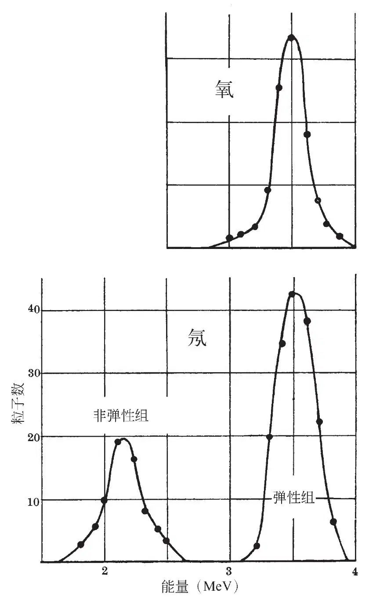
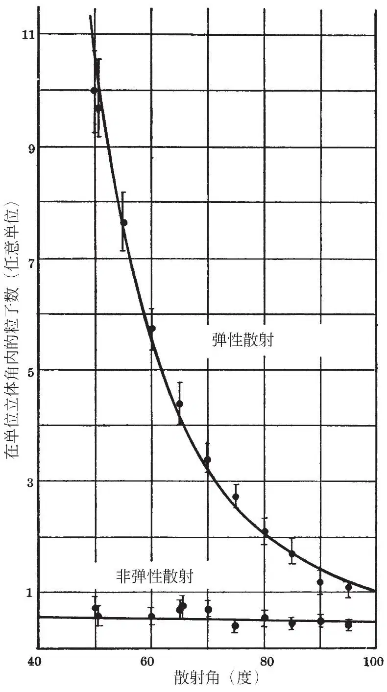

英文
英文鲍威尔等
编者按
一些科学家利用利物浦大学新建的回旋加速器轰击原子核（如氖），从而首次对激发能态下多种原子的稳定核能够存在的观点进行了探讨。这篇论文表明，氖确实存在一个激发态，且该激发态能量比基态能量大约高2.5兆电子伏，但是在实验研究范围内氧似乎没有激发态。本文作者中的塞西尔·弗兰克·鲍威尔和詹姆斯·查德威克凭借他们的研究成果获得了诺贝尔奖。另一位作者艾伦·农·梅是伦敦国王学院的一位讲师，他因与克劳斯·富克斯（后被发现是苏联间谍）有交往而受到了牵连。 英文
最近，我们利用一些轻元素进行了质子散射的实验，实验使用利物浦的回旋加速器来产生质子束，并用照相的方法来检测散射粒子。 英文
我们把一束强度为10–8安培、分散度为1°的质子束，约束于一个静止的系统中，然后将其从回旋加速器的真空罐的附加装置中射出，穿过覆盖了云母窗的直径为1/8英寸的小洞后进入“照相机”。在照相机中，这条狭窄的质子束沿着一个长管轴向穿行，这一长管有个3毫米长的断口，散射粒子能从这个断口中逃逸出来。在与质子束的轴向相平行的方向上放置一块扁平的照相底板，底板与质子束的轴相距1厘米。被充满于照相机中的气体所散射的质子能够穿过长管的断口，并以很小的掠射角射到底板上。这样安置的好处是，假如每个角度区域中都包括适当数量的能用于计数的轨迹的话，那么只用一块底板就能获得用以确定15°到150°范围内散射概率的相关信息。与此同时，我们还能通过照相乳胶中轨迹的长度来确定散射粒子的能量。 英文
如果能够克服在磁体的杂散场中约束质子束的困难，那么我们一天就能得到大约6~8种不同气体散射质子的合适的曝光照片。 英文
我们已经得到了11种元素散射质子的底板，实验中采用的这些元素有的是单质气体的形式，有的是适当的气态化合物的形式。入射粒子在散射点的能量约为4兆电子伏。由氢、氘和氦得到的底板是令人满意的，后续处理的工作还在进行中；但是在这里，我们想把注意力放在较重元素中与弹性散射伴随出现的非弹性散射上，这种非弹性散射以特别直接的方式给出了关于稳定核激发态的信息。 英文
图1显示了在氧气和氖气中散射后偏转了90°的质子的能量分布。在氧气中散射的结果是，只有一个单峰，其对应着发生弹性散射后偏转了90°的质子的能量。而在氖气中散射的结果是，除了弹性散射组之外，在能量较低的位置上还有一个峰，我们将其解释为由20Ne导致的非弹性散射。这一观点是有事实依据的，因为，对氟在氘核轰击下得到的中子能谱进行的分析表明20Ne具有一个能量为1.4兆电子伏的激发态，而我们的实验结果中两组散射粒子的能量差刚好就是这个数值。 英文

图1 英文
我们还研究了氖实验中弹性散射和非弹性散射的散射概率随角度的变化，结果如图2所示。从图中我们可以看到，在角度为40°~80°的范围内，弹性散射的结果与完全由库仑散射而得到的预期结果几乎完全吻合。但与此相反的是，在目前观测所能达到的精度范围内，非弹性散射粒子是以系统质心为中心呈球对称分布的。这意味着，一个入射质子与一个20Ne核发生近程碰撞后形成了复合核，其中非弹性散射质子就是从这个复合核中“蒸发”出来的。 英文

图2 英文
在我们的实验条件下，氧的实验中没有出现非弹性散射质子，这显然是因为氧不存在比基态能量高出4兆电子伏以内的激发态。不过，依据散射随角度的变化关系显示，在大于45°时散射结果严重背离了卢瑟福散射，且随着角度的变化，单位立体角中散射粒子的数目只发生缓慢的变化。在后面的工作中我们将对此进行深入的研究。 英文
对于我们研究过的原子序数比氖大的元素，比如氯和氩，非弹性散射粒子数与弹性散射粒子数的比值远远小于氖实验中得到的结果，这与核电荷增大导致质子入核概率减小是相一致的。因此，要研究轻元素的更高能激发态，或者要得到较大原子序数元素的质子散射结果，就必须用更高能量的质子来进行实验。不过，从我们的实验中可以清楚地看出，我们用的这种方法是非常强大的，短短的几分钟就可以得到曝光底板，而对散射质子能量分布的分析结果也能在短短的几个小时之内完成。另外，至关重要的是，气体靶标的使用有利于纯度控制以及与靶标中的能量损失相关的各种效应的消除。我们可以预期，在使用高能氘核进行的类似实验中这些优点也将会得以体现，只是在这些实验中被散射的入射粒子可能会与衰变产物混在一起。 英文
总之，我们可以确定的是，如果使用照相法来进行检测，那么此前那些只能依靠直流发生器在相对较低的能量水平上进行的实验，现在就可以利用由回旋加速器产生的高能粒子来进行了。 英文
（王耀杨 翻译；汪长征 审稿）